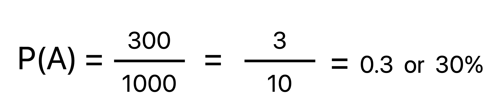
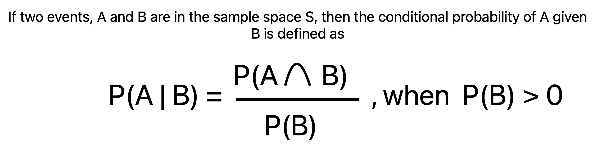
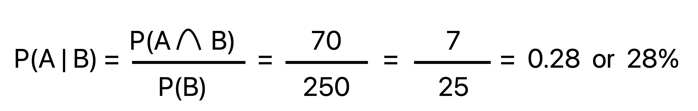

Today, I will be showing you guys how to solve a simple conditional probablility problem.
There are 1,000 students in a school. 300 students are enrolled in a calculus course and 250 students are enrolled in a biology course. There are 70 students who are taking both calculus and biology. If a student is chosen at random, (a) What is the probability that the student is taking calculus? (b) What is the probability that the student is taking calculus given that the student is also taking biology? (c) What is the probability that the student is taking biology given that the student is also taking calculus?
The first thing to note is that this problem has multiple parts (a, b, and c). We will start off by
solving part (a) but before that, you should take note of some important details (i.e, number of students in
each course). I put all important details in bold.
Another thing that would aid us in solving this problem is visualization. For example, a venn diagram
would help us visualize this problem. It is also commonly use in conditional probability problems.
As you can see, the venn diagram makes the problem clearer. There are two circles (called sets) labeled A and B in a rectangle labeled S. Both A and B are called events. Event A represents the number of students taking calculus while event B represents the number of students taking biology. You can see the amount in each respective circle. The intersection of A and B shows the number of students taking both calculus and biology. An intersection represents what two events have in common. It's the overlap of A and B. S is called the sample space or the universal set. The universal set contains all elements or represents all possible outcomes. In this case, S includes all students in the school.
Alternatively, we can also make a small table to help us:
| Students taking calculus | Students taking biology | Students taking calculus and biology | Total # of students |
|---|---|---|---|
| 300 | 250 | 70 | 1000 |
Part (a) states: What is the probability that the student is taking calculus?
This part is fairly simple. To find the probability of a student taking calculus, you would take the number of students taking calculus (300) and divide it by the total number of students (1,000). Another way to look at this is: We divide event (A) by the universal set (S).
Do that and we get the following
So, the probability of a student taking calculus is 0.3 or 30%.
Part (b) states: What is the probability that the student is taking calculus given that the student is also taking biology?
Part (b) is a little bit harder than (a) but if you know the right formula to use, then it's fairly simple.
Before I give you the formula, let's look at this question in another way.
What is the probability of event
A (number of students taking calculus) occurring given that event B (number of students taking biology) has
already occurred?
The way to write this as an equation is: P(A | B)
This is the first part of
the formula to solve this problem. What about the rest?
The formula for conditional probability looks like this:
The probability of event A occurring given that event B has already occurred is equal to the probability of the event A intersect event B divided by the probability of event B. Event B must also be greater than 0.
An important detail to keep in mind is that we already know B has occurred since it was given to us. This means that everything outside of the set B can be discarded. We will only focus on the set B. You can refer to the venn diagram for visualization. Now, this means that the outcome of A can only be possible if it is within the set A intersect B. Or, the overlap of A and B (refer to the venn diagram).
Now, let's use the formula and see what we get:
(Note: the intersect symbol looks like an upside down capital U.)
So, the probability that the student is taking calculus given that the student is also taking biology is 0.28 or 28%.
Part (c) states: What is the probability that the student is taking biology given that the student is also taking calculus?
Part (c) is similar to part (b). You would use the same formula in the previous part to solve this one. However,
the order is going to be different.
This problem asks us: What is the probability of event B given
that event A has already occurred. The equation would look like this now: P(B | A)
Let's use the rest of the formula and see what we get:
So, the probability that the student is taking biology given that the student is also taking calculus is around 0.23 or 23.3%.
You should have notice that because A was given to us in this problem, we only focus on the set A and discard anything outside of A. This means that the outcome of B can olny be possible if it is within the set B intersect A. This is why for the formula, we did the probability of event B intersect event A divided by the probability of event A.